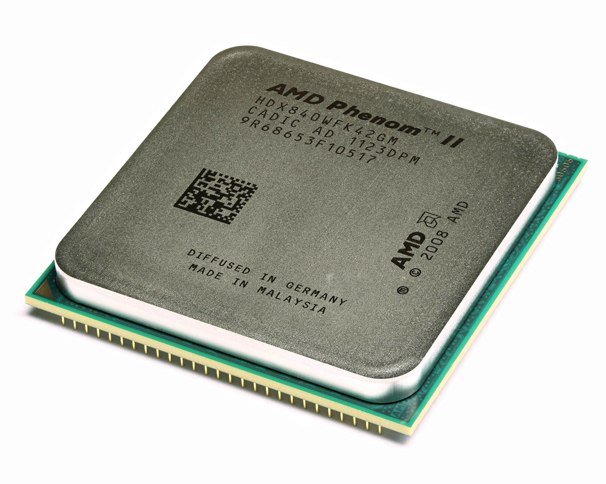

Современные процессоры
Устройство процессора

Ядро процессора – это его основная часть, содержащая все функциональные блоки и осуществляющая выполнение всех логических и арифметических операций.
На рисунке 1 приведена структурная схема устройства ядра процессора. Как видно на рисунке, каждое ядро процессора состоит из нескольких функциональных блоков:
блока выборки инструкций;
блоков декодирования инструкций;
блоков выборки данных;
управляющего блока;
блоков выполнения инструкций;
блоков сохранения результатов;
блока работы с прерываниями;
ПЗУ, содержащего микрокод;
набора регистров;
счетчика команд.
Блок выборки инструкций осуществляет считывание инструкций по адресу, указанному в счетчике команд. Обычно, за такт он считывает несколько инструкций. Количество считываемых инструкций обусловлено количеством блоков декодирования, так как необходимо на каждом такте работы максимально загрузить блоки декодирования. Для того чтобы блок выборки инструкций работал оптимально, в ядре процессора имеется предсказатель переходов.
Предсказатель переходов пытается определить, какая последовательность команд будет выполняться после совершения перехода. Это необходимо, чтобы после условного перехода максимально нагрузить конвейер ядра процессора.
Блоки декодирования, как понятно из названия, – это блоки, которые занимаются декодированием инструкций, т.е. определяют, что надо сделать процессору, и какие дополнительные данные нужны для выполнения инструкции. Задача эта для большинства современных коммерческих процессоров, построенных на базе концепции CISC, – очень сложная. Дело в том, что длина инструкций и количество операндов – нефиксированные, и это сильно усложняет жизнь разработчикам процессоров и делает процесс декодирования нетривиальной задачей.
Часто отдельные сложные команды приходится заменять микрокодом – серией простых инструкций, в совокупности выполняющих то же действие, что и одна сложная инструкция. Набор микрокода прошит в ПЗУ, встроенном в процессоре. К тому же микрокод упрощает разработку процессора, так как отпадает надобность в создании сложноустроенных блоков ядра для выполнения отдельных команд, да и исправить микрокод гораздо проще, чем устранить ошибку в функционировании блока.
В современных процессорах, обычно, бывает 2-4 блока декодирования инструкций, например, в процессорах Intel Core 2 каждое ядро содержит по два таких блока.
Блоки выборки данных осуществляют выборку данных из КЭШ-памяти или ОЗУ, необходимых для выполнения текущих инструкций. Обычно, каждое процессорное ядро содержит несколько блоков выборки данных. Например, в процессорах Intel Core используется по два блока выборки данных для каждого ядра.
Управляющий блок на основании декодированных инструкций управляет работой блоков выполнения инструкций, распределяет нагрузку между ними, обеспечивает своевременное и верное выполнение инструкций. Это один из наиболее важных блоков ядра процессора.
Блоки выполнения инструкций включают в себя несколько разнотипных блоков:
ALU – арифметическое логическое устройство;
FPU – устройство по выполнению операций с плавающей точкой;
Блоки для обработки расширения наборов инструкций. Дополнительные инструкции используются для ускорения обработки потоков данных, шифрования и дешифрования, кодирования видео и так далее. Для этого в ядро процессора вводят дополнительные регистры и наборы логики. На данный момент наиболее популярными расширениями наборов инструкция являются:
MMX (Multimedia Extensions) – набор инструкций, разработанный компанией Intel, для ускорения кодирования и декодирования потоковых аудио и видео-данных;
SSE (Streaming SIMD Extensions) – набор инструкций, разработанный компанией Intel, для выполнения одной и той же последовательности операций над множеством данных с распараллеливанием вычислительного процесса. Наборы команд постоянно совершенствуются, и на данный момент имеются ревизии: SSE, SSE2, SSE3, SSSE3, SSE4;
ATA (Application Targeted Accelerator) – набор инструкций, разработанный компанией Intel, для ускорения работы специализированного программного обеспечения и снижения энергопотребления при работе с такими программами. Эти инструкции могут использоваться, например, при расчете контрольных сумм или поиска данных;
3DNow – набор инструкций, разработанный компанией AMD, для расширения возможностей набора инструкций MMX;
AES (Advanced Encryption Standard) – набор инструкций, разработанный компанией Intel, для ускорения работы приложений, использующих шифрование данных по одноименному алгоритму.
Блок сохранения результатов обеспечивает запись результата выполнения инструкции в ОЗУ по адресу, указанному в обрабатываемой инструкции.
Блок работы с прерываниями. Работа с прерываниями – одна из важнейших задач процессора, позволяющая ему своевременно реагировать на события, прерывать ход работы программы и выполнять требуемые от него действия. Благодаря наличию прерываний, процессор способен к псевдопараллельной работе, т.е. к, так называемой, многозадачности.
Обработка прерываний происходит следующим образом. Процессор перед началом каждого цикла работы проверяет наличие запроса на прерывание. Если есть прерывание для обработки, процессор сохраняет в стек адрес инструкции, которую он должен был выполнить, и данные, полученные после выполнения последней инструкции, и переходит к выполнению функции обработки прерывания.
После окончания выполнения функции обработки прерывания, из стека считываются сохраненные в него данные, и процессор возобновляет выполнение восстановленной задачи.
Регистры – сверхбыстрая оперативная память (доступ к регистрам в несколько раз быстрее доступа к КЭШ-памяти) небольшого объема (несколько сотен байт), входящая в состав процессора, для временного хранения промежуточных результатов выполнения инструкций. Регистры процессора делятся на два типа: регистры общего назначения и специальные регистры.
Регистры общего назначения используются при выполнении арифметических и логических операций, или специфических операций дополнительных наборов инструкций (MMX, SSE и т.д.).
Регистры специального назначения содержат системные данные, необходимые для работы процессора. К таким регистрам относятся, регистры управления, регистры системных адресов, регистры отладки и т.д. Доступ к этим регистрам жестко регламентирован.
Счетчик команд – регистр, содержащий адрес команды, которую процессор начнет выполнять на следующем такте работы.